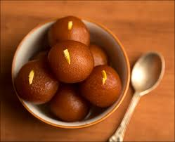

Gulab Jamun
Ingredients
- Sugar
- Ghee
- Mava
Recipe
- To make the syrup, gently heat the cardamom, sugar and 500ml water in a saucepan. Don't let the water boil before the sugar has dissolved. Simmer for 10 mins, then cool.
- Gradually add the rosewater, saffron and a little of its soaking liquid until you have a subtly flavoured syrup. Set aside.
- To make the gulab jamun, use a pestle and mortar to grind together the cardamom and sugar until fine.
- Sieve the milk powder, flour and baking powder into a mixing bowl and stir in the cardamom and sugar mixture. Rub in the 50g ghee or butter using your fingertips until the mixture resembles coarse crumbs.
- Add the yogurt, lemon juice and enough milk to form a soft dough, taking care not to overwork the mixture.
- Oil your hands with a little sunflower oil and shape small portions of the dough into walnut-sized balls, about 3cm in diameter and 20g each. Make sure the dumplings are smooth and have no cracks or folds.
- Reheat the syrup until it comes to the boil, then turn off the heat and cover with a lid.
- Heat the 1kg ghee in a wok or karahi to 130C or until a small piece of dough dropped in turns golden in 40 seconds. Fry the balls, in batches, over a medium heat for 5-7 mins.Add to the warm syrup, leaving them to soak for 2-3 hrs or preferably overnight.
- When ready to eat, warm the gulab jamun through in a wide saucepan, spooning over the syrup. Serve piping hot with the pistachios scattered over.

Jalebi
Ingredients
- All purpose flour / Maida - 100 gm
- Curds / Yoghurt - 1 cup
- Ghee
Recipe
- Mix flour, cornflour, lime juice, curd, food colouring till it forms a thick batter.
- Heat oil and pour hot oil over this and mix well. Let this ferment overnight.
- Heat sugar and water in a sauce pan for 5 mins till it gets transparent and syrupy consistency.
- Heat oil for deep frying.
- Now take the jalebi batter and spoon it in the piping bag and pipe it in hot oil.
- Fry it till crisp and light golden. Put this in hot sugar syrup and let it sit for 30 sec.
- Take it out and serve hot with some milk.